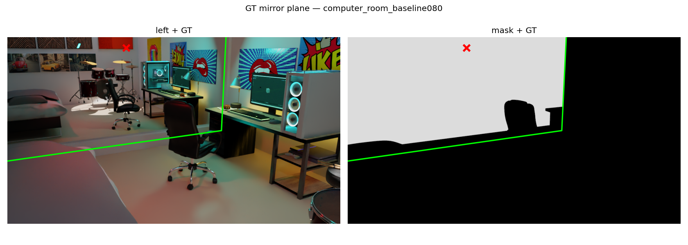
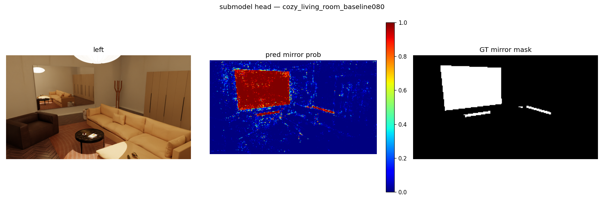
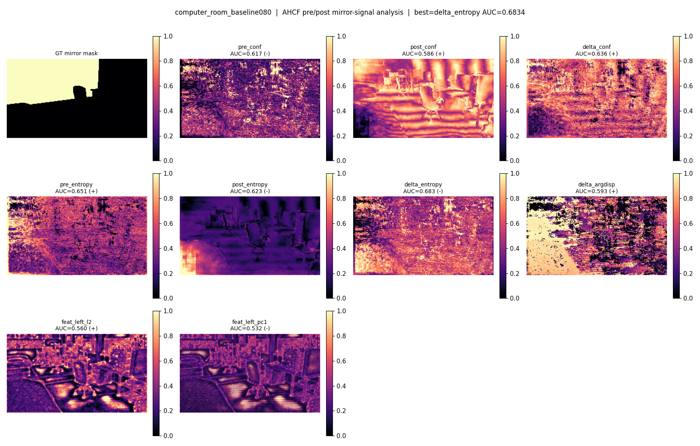
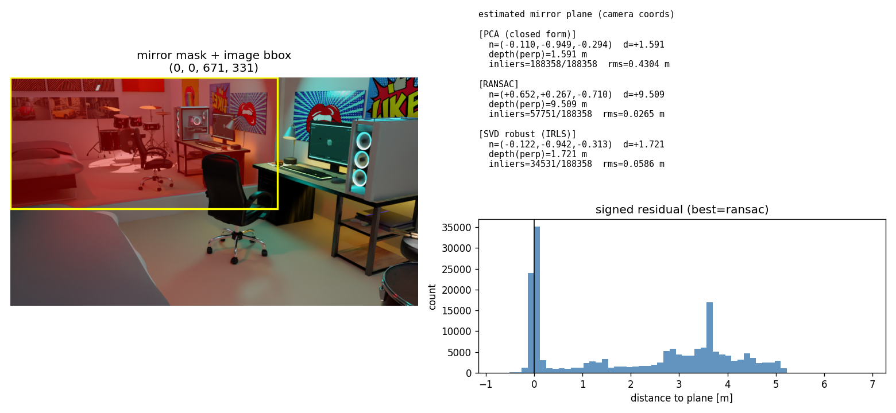

스테레오 입력과 사전학습된 깊이 prior 만으로 거울을 검출하고 거울 평면 정답(GT)을 구축하기
2026학년도 1학기 컴퓨터비전 · 기술 보고서 (2026-06-05) · 진행/실패 포함 작업 로그: worklog.html
Abstract. 거울은 좌·우 영상의 광도 일관성(photometric consistency)을 깨뜨려 스테레오 정합을 교란하지만, 바로 그 불안정성이 거울의 위치를 알려주는 신호가 된다. 본 보고서는 사전학습 스테레오 모델 FoundationStereo(FS)를 재학습하지 않고, FS가 내부적으로 이미 계산한 prior(side-tuning 특징, cost-volume 통계)만으로 거울을 다루는 일련의 실험을 정리한다. (1) FS prior 위에 픽셀당 경량 MLP 헤드를 얹어 거울을 검출하면, 한 장면을 완전히 제외하고 평가하는 LOSO(leave-one-scene-out, 12-fold)에서 평균 ROC AUC 0.911을 얻는다. (2) FS의 핵심 모듈 AHCF(Attentive Hybrid Cost Filtering) 전·후의 cost-volume을 같은 분류기로 디코딩해 비교하면, AHCF 이전에는 거울 신호가 우연 수준(AUC≈0.51)이다가 이후에 분리도가 상승(AUC 최대 0.80)한다 — 즉 거울 신호는 AHCF가 생성한다. (3) 거울 평면을 점군에 RANSAC으로 적합하면 강건하게(잔차 RMS ≈ 0.03 m) 평면을 얻지만, 그 평면은 거울면이 아니라 반사면이다(원리적 한계). (4) 이를 정량 평가하기 위해 Blender 원본에서 거울 평면 GT를 좌측 카메라 좌표로 추출하는 도구를 구현했고, 그 과정에서 데이터셋이 가정한 카메라 초점거리(50 mm)가 실제 값(장면별 26/30/50 mm)과 다르다는 스케일 오류를 발견·교정했다.
거울은 실내 3D 재구성에서 고질적인 실패 원인이다. 거울 표면은 자신의 깊이가 아니라 반사된 장면의 깊이를 보여주므로, 일반적인 스테레오·MVS 파이프라인은 거울 너머의 가상 공간을 실제 기하로 오인한다. 본 연구의 목표는 거울을 별도로 학습하지 않고, 강력한 깊이 prior를 가진 사전학습 모델 FoundationStereo [1]의 내부 표현만으로 (i) 거울 영역을 검출하고, (ii) 거울 평면 기하(법선·거리·경계)를 추정하여 MirrorGaussian [2] 같은 후속 재구성에 넘기는 것이다.
핵심 가설은 다음과 같다. 거울이 유발하는 정합 불안정성 자체가 거울의 prior가 된다. 거울 영역에서 FS는 (a) 낮은 매칭 신뢰도, (b) 높은 분포 엔트로피, (c) 불안정한 disparity를 보이며, 이 신호들은 FS를 한 번 추론하는 것만으로 얻어진다. 본 보고서는 이 가설을 네 갈래의 실험으로 검증한다.
FoundationStereo는 단안 깊이 기반 모델의 풍부한 특징을 스테레오에 이식한 사전학습 모델로, 강한 zero-shot 일반화를 보인다. 본 연구가 추출하는 prior는 세 가지다.
feat_left (128채널 2D 특징): 영상의 의미·구조 표현.corr_stem 출력): 원시 매칭 비용.cost_agg 출력): 집계·정제된 매칭 비용.두 cost volume에 동일한 FS 분류기를 적용해 disparity 분포를 얻고, 픽셀별 신뢰도(분포 최대확률), 엔트로피, argmax disparity를 계산한다. 이로써 "AHCF가 거울 영역의 분포를 어떻게 바꾸는가"를 같은 잣대로 비교할 수 있다.
자매 프로젝트 MakeStereoDataset로 Blender 17개 실내 장면을 물리 기반 렌더링하여 스테레오 쌍(베이스라인 0.08 m, 1024×576)과 거울 마스크 GT를 생성했다. 거울은 단순한 흰 사각형이 아니라 실제 광선추적 반사로 렌더링되어, FS가 거울을 통과해 반사 장면의 깊이를 보도록 만든다.
FS는 동결한 채, 픽셀당 136차원 특징(feat_left 128 + cost 통계 8: pre/post의 conf·entropy·argdisp, Δconf, Δentropy) 위에 작은 MLP(은닉 64)만 학습해 픽셀별 거울 확률을 예측한다. 일반화는 LOSO로 측정한다: 한 장면을 완전히 빼고 나머지로 학습한 뒤 그 장면에서 평가한다.
각 prior 신호 맵을 거울 마스크와 대조해 ROC AUC로 분리도를 매긴다. AHCF 이전(pre_*)과 이후(post_*, delta_*)를 비교하여 "거울 신호가 어느 단계에서 생기는가"를 규명한다.
거울 마스크 영역의 3D 점들에 PCA / RANSAC / 강건 IRLS로 평면을 적합한다. RANSAC은 강건하나, 적합되는 평면은 거울면이 아니라 반사면이다 — 거울면은 실제 점 P와 반사점 P′의 수직이등분면이므로, 반사점 P′만으로는 복원할 수 없다(§5.1).
정공법(반사 대칭으로 거울면을 직접 찾기) 평가에 필요한 정답을 위해, Blender 원본에서 거울 메쉬의 최소제곱 평면을 추출하고 좌측 카메라의 OpenCV 좌표로 변환하는 2단계 도구를 구현했다. Blender 카메라 규약(−Z 전방/+Y 상)을 OpenCV 규약(+Z 전방/+Y 하)으로 바꾸는 축 변환이 핵심이다:
M = F · C−1, F = diag(1, −1, −1), ncam = R nworld, d = −n·c
여기서 C는 카메라→월드 외부행렬, R는 M의 회전부다. 변환의 정당성은 GT 평면 모서리를 영상에 재투영해 거울 마스크와 겹치는지로 검증한다(그림 4).
단일 장면 내부 분할에서는 거의 완벽하게 분리된다(예: cozy_living_room AUC 0.999 / IoU 0.92). 더 엄격한 LOSO(12-fold, 미지 장면)에서도 평균 AUC 0.911(중앙값 0.939)로, FS prior가 장면에 무관한 "거울다움"을 인코딩함을 보인다. IoU는 평균 0.454로, 작은 거울(bedroom)에서 약하다.
| 평가 | AUC | IoU |
|---|---|---|
| 단일 장면 (cozy_living_room, 70/30 분할) | 0.999 | 0.92 |
| 단일 장면 (computer_room) | 0.988 | 0.85 |
| LOSO 평균 (12-fold, 미지 장면) | 0.911 | 0.454 |
| LOSO 중앙값 | 0.939 | 0.431 |

모든 장면에서 AHCF 이전 신호(pre_conf, pre_entropy)는 우연 수준(AUC≈0.51)인 반면, AHCF 이후(post_*)와 변화량(delta_*)은 분리도가 뚜렷이 상승한다. 즉 거울 신호는 입력 특징이 아니라 AHCF 집계 단계에서 생성된다. 장면별 최고 신호와 AUC는 표 2와 같다.
| 장면 | PCA rms(m) | RANSAC rms(m) | 최고 AHCF 신호 (AUC) | 검출 AUC/IoU |
|---|---|---|---|---|
| archiviz | 0.427 | 0.047 | delta_conf (0.55) | 0.992 / 0.85 |
| blue_bathroom | 0.291 | 0.034 | delta_argdisp (0.67) | 0.995 / 0.87 |
| computer_room | 0.430 | 0.027 | delta_entropy (0.68) | 0.988 / 0.85 |
| cozy_living_room | 0.804 | 0.040 | post_conf (0.59) | 0.999 / 0.92 |
| green_house | 0.464 | 0.026 | post_entropy (0.74) | 0.985 / 0.73 |
| gym | 0.919 | 0.062 | delta_argdisp (0.60) | 0.989 / 0.85 |
| modern_living_room | 0.124 | 0.040 | feat_left_pc1 (0.80) | — |
| scandinavian | 0.644 | 0.051 | post_entropy (0.75) | 0.996 / 0.88 |

pre_*(0.51)→post_*/delta_*(최대 0.68)로 상승 — AHCF가 거울 신호를 강화함을 보인다. (표시는 패널별 1–99 백분위 정규화)RANSAC은 PCA 대비 잔차 RMS를 한 자릿수 낮춘다(표 2; 예 computer_room 0.43→0.027 m). 그러나 적합된 평면의 깊이는 거울면이 아니라 반사면의 것이다(§5.1, 그림 3).

make_mirror_gt.py --all로 16개 scene의 GT를 생성했다. 추출 평면은 거의 완전히 평면(planarity RMS ≈ 0)이며, Blender 카메라와 데이터셋 메타가 일치(ext_diff ≈ 0)한다. 거울 객체는 데이터셋이 실제 렌더에 쓴 prepare_meta.mirror_objects를 우선 사용하고, 잘못 잡힌 scene(bedroom)만 교정했다. 재투영 오버레이가 거울 마스크와 겹쳐 좌표 변환의 정당성을 입증한다(그림 4).
| 장면 | 거울 수 | 실제 lens | GT 수직거리(m) | 비고 |
|---|---|---|---|---|
| computer_room | 1 | 30 mm | 3.24 | — |
| cozy_living_room | 1 | 26 mm | 6.56 | — |
| archiviz / flat-archiviz | 2 | 50 mm | 6.36 | 문짝 거울 2개 |
| bedroom | 5 | 50 mm | 3.64 | 옷장 미러도어(동일 평면), 거울 객체 교정 |
| living_room | 3 | — | 5.75 | texture-mirror 가림 우회 |
| livingroom / loft / sunlight … | 6 / 7 / 2 | 26–35 mm | — | 멀티거울 |
품질 플래그(평가 시 제외 권장): blue_bathroom 프레임 메쉬, loft/Cube.019(planRMS 0.055), minigym/view04(큐브형 거울 → 평면 GT 불안정). 상세는 worklog.

거울 안쪽 점군은 반사된 가상 장면이므로, 거기에 적합한 평면은 거울면이 아니라 반사면이다. computer_room에서 RANSAC 반사면의 수직거리는 약 9.5 m인 반면, 본 연구가 추출한 GT 거울면은 3.24 m로, 반사면이 거울면보다 훨씬 깊다. 거울면 M은 실제 점 P와 그 반사점 P′의 수직이등분면이므로, 반사점만 가지고는 복원이 불가능하다. 검출(어디 있는가)은 prior로 충분하지만, 거울 평면 자체는 점군 적합으로 풀 수 없다. 해법은 반사 대칭을 직접 이용하는 정공법이다(§6).
lens = 50 mm로 가정했으나 Blender 실제 값은 장면마다 다름을 확인했다(computer_room 30 mm, cozy 26 mm, archiviz 50 mm). 가정 fx가 (50/실제)배 과대하므로, FS가 산출하는 절대 깊이(depth = fx·B/disp)가 같은 비율로 과대 스케일된다(예: computer_room ×1.667). 이로써 RANSAC 반사면의 참 거리는 약 5.7 m로 보정되어 GT 거울면 3.24 m의 약 1.76배가 되며, 기존에 관찰된 "반사면이 거울면보다 1.6–1.7배 깊다"는 결과와 정합한다.
중요한 점: disparity 기반 결론(검출, AHCF RQ)은 K와 무관하므로 영향받지 않으며, GT 기하 역시 절대 미터라 정확하다. 영향은 오직 절대 거리 척도에 국한된다. 본 도구는 장면별 실제 K를 추출·저장하므로, 향후 절대 metric 평가 전에 이를 적용해 깊이 스케일을 교정할 수 있다.
FS prior 만으로 거울 검출은 미지 장면에서도 안정적으로 동작하며(LOSO AUC 0.911), 그 신호는 FS의 AHCF 단계에서 생성됨을 정량적으로 확인했다. 반면 거울 평면은 반사면-거울면 구분이라는 원리적 한계로 점군 적합만으로는 풀 수 없으며, 이를 평가할 거울 평면 GT 인프라를 구축했다.
향후 과제는 두 가지다. (i) 장면별 실제 초점거리로 K와 점군을 재생성해 절대 스케일을 교정한다. (ii) 반사 대칭 reflectM(거울 안 점 P′) ↔ 방 점 P 를 정합하는 정공법(RANSAC+ICP 또는 3대응 닫힌형)을 구현하고, 본 GT로 법선 각도·수직거리·중심 거리·경계 IoU를 평가한다.
코드·실험: FoundationStereo/scripts/, experiments/<scene>/. 설계·계획 문서: docs/superpowers/. 본 보고서는 2026-06-05 기준 실험 결과로 생성됨.